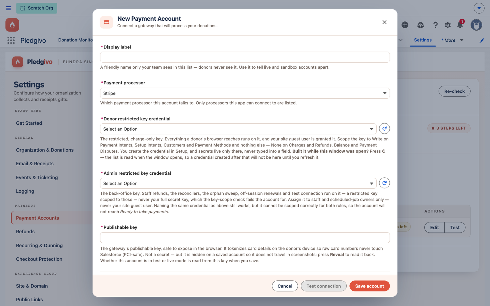

Getting Started
Connecting Stripe#
Stripe is the only payment gateway shipped today, reached through a gateway abstraction so a second processor could be added later without touching the donation pipeline.
How the pieces fit together#
Pledgivo separates where credentials live from which campaign uses them:
| Layer | Object | Holds |
|---|---|---|
| Secrets | Named Credential (Stripe_API) + External Credential (Stripe_External) |
The Stripe secret key. Never stored in a custom field, never visible in Setup to non-admins. |
| Per-account config | Payment_Account__c |
One record per Stripe account you connect — publishable key, display label, gateway type, active status, and which capabilities (ACH, recurring) it supports. |
| Gateway registry | Payment_Gateway__mdt |
Custom metadata identifying which Apex class (StripeGateway) implements a given gateway type, and which API version to call. |
| Routing | Campaign.Payment_Account__c |
A lookup on the Campaign itself — which account that campaign's donations settle to. One account per campaign. |
A single org can connect more than one Stripe account (for example, separate accounts per fiscal sponsee) and route different campaigns to different accounts.
First, authorize the permission sets to use the credential#
One-time step after install — donations fail until you do this
Salesforce only lets a user authenticate through an External Credential if their permission set is explicitly mapped to that credential's principal. That mapping is org configuration and cannot be included in a managed package, so it's the one thing you have to wire up by hand after installing. See Grant the Stripe credential.
The grant has to live on a permission set you create in your own org — the packaged
Fundraising_* sets are managed, and a managed permission set can't be given this
mapping at all.
- Setup → Permission Sets → New. Name it anything, e.g.
Stripe Credential Access. - Open it → External Credential Principal Access → Edit.
- Add the Stripe external credential's
OrgPrincipaland save. - Manage Assignments → assign it to both:
- your fundraising staff — staff-initiated charges, refunds, and Test Connection.
- your Experience Cloud site's guest user — the public donation form. Donors are anonymous site visitors, so their payments run under the guest user; without this the donation page fails at the payment step even though everything else on it works.
The symptom of a missing mapping is a callout authorization error rather than a Stripe decline — if a freshly installed org reports one, check this first.
This step grants use of the credential. It never exposes the secret key: no one mapped here can read the key back, and the key itself is entered separately in the next section.
Connect an account#
- Settings → Payments → Payment Accounts.
- Click New Payment Account and provide a label (for internal reference — donors never see it) and the Stripe keys for the account you're connecting.
- Pledgivo stores the secret key in the
Stripe_APINamed Credential and the publishable key on thePayment_Account__crecord (publishable keys are safe to expose — they're designed to ship to the browser). - Click Test Connection. This makes a lightweight, read-only Stripe API call to confirm the key works before you route any campaign to it.

**What it shows.** The New Payment Account form — Display label, Gateway type, and a **Named credential** picker instead of a raw secret-key field, plus the publishable key (safe to expose) and optional display fields. There is no field anywhere on this form for the Stripe secret key itself; it's created once under Setup → Named Credentials and only referenced here.
Test mode vs. live mode
Stripe test and live keys are separate credential sets tied to separate Stripe API objects — a PaymentIntent created with a test key is never visible to a live key, and vice versa. Connect a test-mode Payment Account while you're building out campaigns, and create a second, live-mode Payment Account when you're ready to accept real donations. Route each campaign explicitly — nothing switches automatically.
Route a campaign to an account#
Every Campaign that accepts donations needs its Payment account set — the
Payment_Account__c lookup on the Campaign. Set it from the Fundraisers console wizard's
Goal & fund step (the wizard won't let you publish without one) or directly on the Campaign
record. See Set up your first campaign.
An org may connect several Stripe accounts, but a campaign settles to exactly one — so this is a single picker, not a list. A Payment Account that a campaign still points at can't be deleted; the Payments panel says so rather than letting the reference break.
Why there's no webhook step#
Most Stripe integrations ask you to register a webhook endpoint URL in the Stripe Dashboard and copy a signing secret back into the app. Pledgivo doesn't have an inbound webhook at all — Salesforce confirms every payment by calling Stripe's API directly (immediately after the donor pays, and again on a backup schedule), so there's no endpoint to register, no signing secret to store, and no webhook delivery to monitor. See Donations & payments for the full flow.
What's technically happening (PCI scope)#
Card data never touches Apex. The donation form loads Stripe's Payment Element (Stripe.js)
inside a same-origin Visualforce page framed as an iframe on the Experience Cloud site — the
donor's card number goes straight from their browser to Stripe. At most, Salesforce receives
a paymentMethod.id back from the browser (on the recurring/setup path only) — never a card
number or full PaymentIntent payload. Payment success itself is confirmed server-side, by Apex
re-fetching the PaymentIntent from Stripe's API rather than trusting anything the browser
reports. This keeps the org out of PCI SAQ D scope. See
Stripe → for the architecture in full.
Next#
-
Finish setup
Org detection, record types, and health checks.
-
Understand payment records
How Opportunities, staging records, and payment status fields relate.
-
Stripe architecture reference
The gateway interface, reconciliation jobs, and refund/dispute handling.